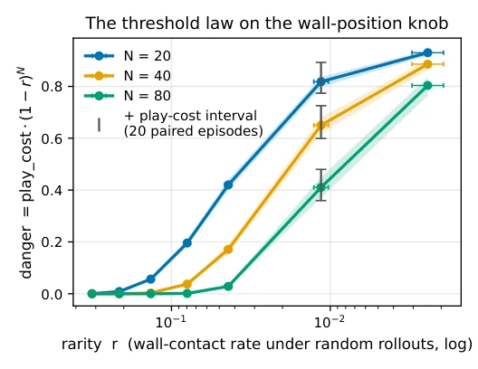
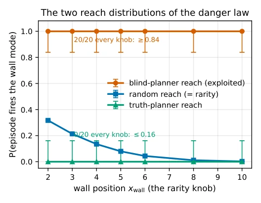
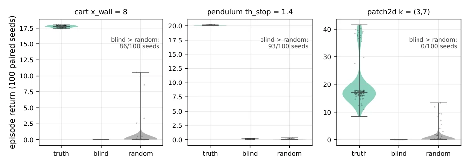
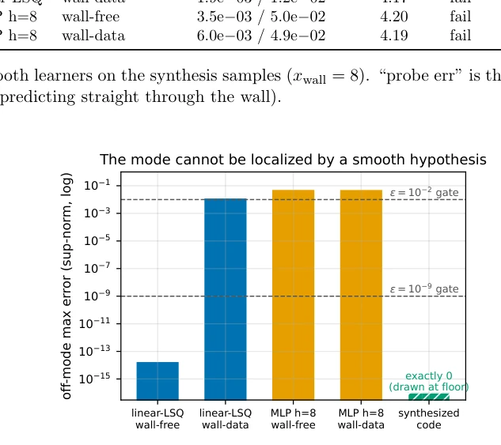

这篇论文给 Code World Model 的“验证即正确”迷思泼了盆冷水。作者用数学证明了在连续控制中，采样验证存在致命盲区：只要没采到那个“罕见规则”（比如一堵墙），模型就能完美通过测试，但部署后会被规划器 exploit 到死。亮点是理论扎实，把离散世界的结论推广到了连续域，还提出了“定位预算”概念，证明光滑模型没法把错误压缩到任意小，除非边界不连续。槽点是实验场景偏理想化，主要靠 1D/2D 几何构造，真实机器人环境更复杂。而且 GPT-5.x 在 1D 能修好，2D 就崩，说明 LLM 的泛化能力在几何边界上依然脆弱。总之，这是给那些盲目相信“采样通过即安全”的 CWM 研究者的警告信，提醒他们别被采样覆盖率骗了。
This paper pours cold water on the Code World Model's "Verification is Correct" myth. The authors mathematically prove that in continuous control, sampling verification has fatal blind spots: as long as that "rare rule" (e.g., a wall) is not sampled, the model passes the test perfectly, but after deployment, it will be exploited to death by the planner. The highlight is solid theory, extending conclusions from the discrete world to the continuous domain, and proposing the "Localization Budget" concept, proving smooth models cannot compress errors to arbitrarily small levels unless boundaries are discontinuous. The drawback is that experimental scenarios are somewhat idealized, relying mainly on 1D/2D geometric constructions, while real robot environments are more complex. Moreover, GPT-5.x can fix in 1D but collapses in 2D, indicating that LLM generalization capabilities remain fragile on geometric boundaries. In short, this is a warning letter to CWM researchers who blindly believe "sampling pass means safety", reminding them not to be deceived by sampling coverage.
研究动机Motivation
现有基于模型的 RL 文献（如 Lambert et al., 2020; Hafner et al., 2020）通常假设世界模型误差是普遍且累积的，而 Code World Model 范式（Aguilar Martín, 2026）则依赖采样验证。本文动机在于解决连续状态空间中“验证通过但几何错误”的问题：模型在采样点外完全错误，却因未采到关键模式而通过测试。这导致规划器信任错误模型，遭受灾难性回报损失。相关工作往往掩盖了这种局部化失效，因为状态精度指标会稀释误差。本文旨在量化这种“危险定律”，证明在连续域中，采样验证无法保证模型在未见区域的安全性，特别是当模式具有不连续重置特性时。此外，作者指出离散世界的结论在连续域是否成立尚存疑问，需要重新验证。
Existing model-based RL literature (e.g., Lambert et al., 2020; Hafner et al., 2020) typically assumes world model errors are universal and cumulative, while the Code World Model paradigm (Aguilar Martín, 2026) relies on sampling verification. The motivation of this paper lies in solving the problem of "verified but geometrically wrong" in continuous state spaces: the model is completely wrong outside sampled points, yet passes the test due to not sampling key patterns. This leads the planner to trust the wrong model, suffering catastrophic reward loss. Related work often masks this localized failure because state precision metrics dilute errors. This paper aims to quantify this "danger law", proving that in the continuous domain, sampling verification cannot guarantee model safety in unseen regions, especially when patterns have discontinuous reset characteristics. Additionally, the authors point out that whether conclusions from the discrete world hold in the continuous domain remain questionable and need re-verification.
The overall process is LLM synthesizing executable world models, classical planner search, and the model is accepted if it passes verification on sampled transitions. Innovations lie in the theoretical framework: 1. Define "danger" as expected risk, prove risk factorization condition (Proposition 3), gating omission probability exactly (1-r)^N. 2. Propose "Localization Budget", prove Lipschitz models cannot compress divergence regions to arbitrarily small volume under fixed amplitude unless boundaries are discontinuous (Proposition 9). 3. Distinguish trigger arity and entry barrier dimension, analyze identifiability (Proposition 5, 6). Experiments use three hybrid instruments (Cart-with-wall, Pendulum-with-stop, PatchField2D), verifying identifiability through independent accepted samples and version space certificates. The LLM synthesis part tests GPT-5.x repair capability under different geometric constraints. Additionally, the authors also proved that under frozen semantics, patterns are internally unfalsifiable, further revealing sampling limitations.
Using three hybrid instruments: Cart-with-wall, Pendulum-with-stop, 4D bimodal patch field. Baselines include random shooting MPC and CEM planners. Metric is normalized regret (play cost). Results found: In 1D scenarios GPT-5.x can infer rules from boundary contact (105/111 success), but 2D region repair fails completely (0/156). Gating verification coverage is only about 1.9%, unable to capture planner query blind spots. Ablation experiments show curvature, prompt budget, variable identification interventions cannot restore 2D repair. Independent accepted sample test proves sampling consistency cannot distinguish wrong rules. Conclusion is identifiability depends on hypothesis class and instrument geometry, not evidence coverage. Additionally, the authors also proved the category relativity of identifiability through version space certificates, pointing out that under specific geometries, certain wrong rules are unfalsifiable.

Figure 1: The threshold law on the wall-position knob (Table 1 rendered): danger ≈0 while the wall is inside the random envelope, rises through the elbow, plateaus at full play cost; N shifts the threshold. Bands and horizontal bars are the rarity’s Wilson interval propagated through play cost·(1−r)N, which is monotone in r, so the transformed interval is the corner pair; a printed point with no visible band has an interval narrower than the marker.

Figure 2: The two reach distributions of the danger law: the exploited planner’s mode reach is flat at 1.00 across the knob; random reach (= rarity) falls two orders of magnitude; the truth planner’s trajectory reach is a censored zero at every knob (0/20 episodes) and is drawn as an upper bound rather than as a point — the mode lives on the truth planner’s query distribution (Proposition 8), not its path. Error bars are Wilson intervals: binomial over 20 episodes for the two reach curves, and over 30,000 rollouts for rarity.

Figure 3: Per-seed return distributions for the three 100-paired-episode experiments (violins with every seed overplotted). The exploitation claim is the gap between the truth planner and the pinned blind planner, and it is total in every panel. The random baseline’s heavy upper tail — a few episodes that wander onto a reward plateau — is what carries its mean above the blind planner’s on the cart, against 86 of 100 individual seeds; on PatchField2D the comparison is unambiguous in the other direction (0 of 100).
其他图片Other Figures

Figure 5: Off-mode max error (log) by model and training data. The wall-free linear fit sits at float noise and passes both gates (blind); four contact rows tilt it twelve orders of magnitude; synthesized code is exactly zero off-mode.